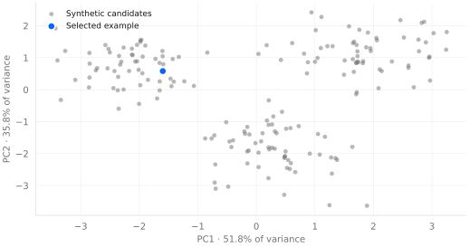
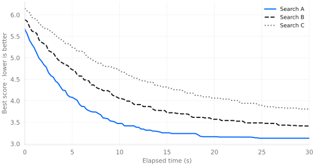
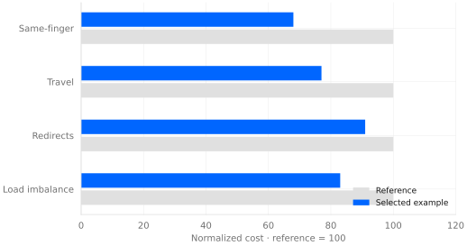

Reading the landscape of keyboard layouts
A small study in search, structure, and the trade-offs behind a single score.
Design specimen · All figures and numerical results are synthetic examples, not experimental findings.
Abstract
A good score tells us which candidate to inspect. It does not tell us how that candidate differs from its neighbors. This illustrative paper pairs a two-dimensional map with search trajectories and a small metric comparison. The aim is to make the shape of an optimization problem readable without hiding the assumptions behind the pictures.
1. A score is a starting point
Keyboard layout search compresses many decisions into one number. Two candidates may have similar scores while distributing effort very differently. One may reduce repeated use of a finger; another may favor shorter travel. A useful research view keeps those differences visible.
We organize the example around three questions: where do candidates sit relative to one another, how does search progress, and which costs change in the selected candidate?
2. Related work and framing
A layout can be understood as an assignment problem, a sequence of movements, or an interface learned through practice. Each view emphasizes different evidence. An assignment model is useful for comparing many candidates quickly, while a study of actual use must also account for familiarity, adaptation, and individual differences.
The sample references at the end of this paper demonstrate numbered citations and bibliography formatting. They are fictional placeholders, not sources for the claims in this specimen. The first entry represents a survey [1]; the second represents a methodological paper on comparing search procedures [2]. A real manuscript would replace both with verified sources and narrow its claims accordingly.
The distinction between optimization and evaluation matters. Search asks which candidate performs best under a particular objective. Evaluation asks whether that objective captures the outcomes we care about. A successful search can expose weaknesses in a scoring model just as readily as it can identify a useful layout.
2.1 Scope of the example
This paper is a presentation exercise rather than an empirical study. It uses a fixed synthetic dataset to explore the relationship between text, figures, tables, and supporting material. No participants were recruited, and no measurements of typing speed or comfort were collected. The displayed candidates should therefore be read as illustrative observations rather than recommendations.
3. Constructing a readable map
For this specimen, we generate 180 observations with six synthetic features using seed 42. Each feature is centered and scaled before principal component analysis. Singular value decomposition produces the plotted coordinates and the explained-variance labels.
The map is descriptive. A gap between groups can suggest a direction for inspection, but it cannot establish that a family is better or that all useful alternatives have been found. A real study would report the encoding, corpus, geometry, and scoring profile alongside the projection.

4. Experimental setup
A complete experiment begins with an explicit record of its inputs. In a real layout comparison, that record would identify the physical geometry, the text corpus, the permitted symbols, and the profile used to combine individual costs. Keeping these choices fixed makes differences between search methods easier to interpret.
4.1 Inputs and preprocessing
For this specimen, the plotting script generates six correlated features from a seeded synthetic process. Standardizing each feature prevents a large numerical range from dominating the projection. The transformation is fitted once to the displayed sample; all points in the figure share the same coordinate system.
A real corpus would need a separate preprocessing description. Decisions about capitalization, punctuation, whitespace, and unsupported characters can change the observed frequencies. These choices belong in the methods section rather than being left implicit in an implementation. An example data-documentation reference is included to show the citation style [3].
4.2 Search budget and reporting
The illustrative convergence figure spans thirty seconds, but its curves are simulated rather than timed. For an actual benchmark, we would report both elapsed time and the number of objective evaluations. The former reflects practical waiting time; the latter helps separate search behavior from machine performance.
Repeated trials should begin from recorded seeds, with the same constraints and stopping conditions. Summaries should describe the distribution across trials rather than selecting the most favorable run. A useful report would include a central estimate, a measure of spread, and the number of trials contributing to each result.
5. Reading progress and trade-offs
The simulated trajectories separate rapid early gains from slower later improvements. Best-so-far curves show what has been retained, not every candidate that was visited. Comparing real optimizers would also require repeated seeds and a shared evaluation budget.


| Metric | Reference | Selected |
|---|---|---|
| Same-finger | 100 | 68 |
| Travel | 100 | 77 |
| Redirects | 100 | 91 |
| Load imbalance | 100 | 83 |
5.1 Interpreting the comparison
Table 1 deliberately uses a common reference value so that the comparison is easy to scan. The largest illustrative reduction appears in the same-finger cost, while redirects move less. These values do not establish that one component is more important than another: importance depends on the scoring profile and the purpose of the experiment.
A normalized comparison also hides the original units. A reduction from 100 to 68 communicates relative change, but not the absolute frequency of an event or its practical effect. A publication should provide enough context for readers to recover that distinction, either in the table notes or in supplementary data.
5.2 Sensitivity to the scoring profile
One natural follow-up is to vary the weights assigned to individual costs. If a candidate remains competitive across several reasonable profiles, it may be a more useful starting point than a candidate that wins only under one narrow choice. This is a question for additional experiments, not a conclusion supported by the current figures.
A sample sensitivity-analysis reference [4] illustrates how a citation can sit within a longer discussion. In a real study, the tested weight ranges would need an independent justification. Showing a stable ranking over an arbitrary range would not, by itself, establish that the ranking reflects human preferences.
6. Discussion
The selected example improves all four displayed costs by construction. This is a demonstration of presentation, not evidence for a particular layout. A substantive study should include unfavorable outcomes, sensitivity to metric weights, and variation across corpora.
The next step is to replace these synthetic observations with a recorded run. Preserve its seed, input hashes, and evaluation budget so that the figures remain connected to an inspectable experiment.
7. Limitations and validity
The synthetic generator makes the geometry of the example unusually convenient: the projected candidates form visible groups, and the selected candidate improves every displayed cost. Real data may contain overlapping groups, noisy measurements, and conflicting objectives. The presentation should remain readable when the results are less orderly.
A two-dimensional projection necessarily omits information. Nearby points can differ along features that are not well represented in the displayed axes. The percentage of variance explained helps characterize the projection, but it does not turn visual proximity into a guarantee of equivalent behavior. Inspecting original feature values remains necessary.
The scoring model is another source of uncertainty. It may capture repeated finger use or travel while leaving out learning effort, fatigue, or individual preferences. Without observations from actual use, the paper cannot claim improvements in comfort or typing performance. These are boundaries of interpretation, not minor qualifications to a measured result.
8. Reproducibility and availability
The supplied plotting script generates the figures from seed 42. Its output includes scalable graphics for the webpage and vector PDFs for the typeset paper. The same numerical values appear in the metric chart and table, allowing a reader to compare the two presentations directly.
For future experiments, each reported figure should be associated with a saved run and a manifest of its inputs. A useful manifest records the seed, algorithm parameters, evaluation budget, and hashes of the corpus, geometry, and profile. Environment details help explain timing differences even when the numerical outcome is reproducible [5].
9. Conclusion
A readable account of layout search needs more than a winning score. A map provides context, a trajectory shows progress, and a component comparison explains which costs changed. Together, these views make it easier to ask whether a result is robust, interpretable, and worth investigating further.
This specimen demonstrates that reporting structure using synthetic examples. The next substantive step is to replace the sample observations with recorded experiments, preserve the unfavorable cases, and connect every conclusion to evidence. The figures should support that argument rather than stand in for it.
Declarations
This is a design specimen, not a report of a completed study. No participant data are included. Funding, competing interests, and acknowledgments are intentionally left unspecified until there is a real study to describe.
Appendix A. Reading the sample artifacts
A.1 Suggested inspection sequence
Start with the abstract to identify the question and the limits of the evidence. Then read the map alongside its caption before comparing the convergence curves. Finally, check the component table against the selected candidate. This sequence moves from context to search behavior to individual costs without requiring the reader to infer the role of each graphic.
When replacing the examples, check that every axis includes its units, every abbreviation is explained, and every normalized quantity identifies its reference. Keep figure numbers stable during editing so that nearby discussion continues to point to the correct evidence. Short captions can identify the pattern; longer qualifications belong in the body.
A.2 Replacing placeholder material
The bibliography below is intentionally fictional. Its author labels, titles, venues, and page ranges exist only to exercise the visual design. Replace each entry and its in-text citation with a verified source before sharing the paper as research. The synthetic-data notice should remain until the numerical examples have also been replaced.
Sample bibliography
- Example Author A and Example Author B. A survey of keyboard layout evaluation. Example Journal of Interface Studies, 2024, 12(2), 41–58. [Fictional placeholder.]
- Example Author C. Comparing stochastic search under a fixed budget. Proceedings of the Example Search Workshop, 2023, 15–24. [Fictional placeholder.]
- Example Author D and Example Author E. Documenting text corpora for reproducible analysis. Example Data Methods, 2025, 3(1), 1–12. [Fictional placeholder.]
- Example Author F. Sensitivity analysis for weighted objectives. Example Computational Reports, 2024, 8, 101–116. [Fictional placeholder.]
- Example Author G. From experiment logs to inspectable research artifacts. Example Reproducibility Notes, 2026, 2(1), 9–18. [Fictional placeholder.]